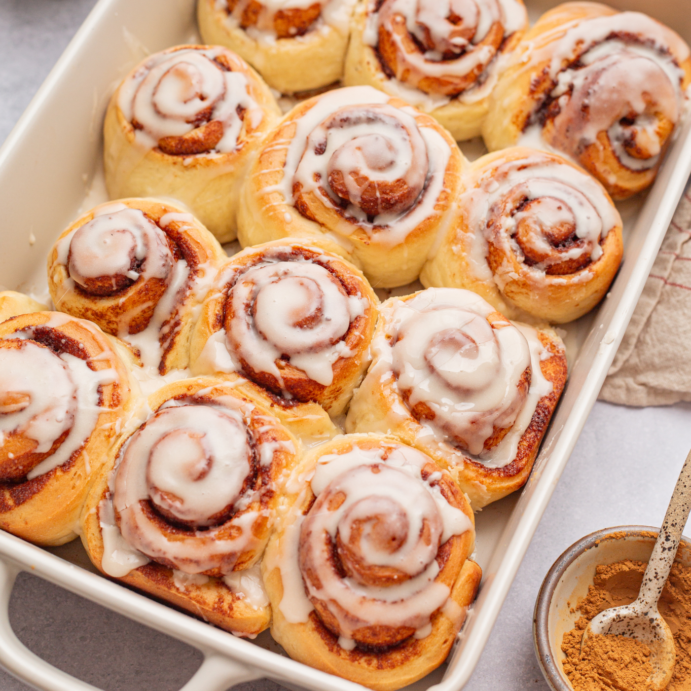

Cinnamon Rolls

This 45-minute cinnamon roll recipe is my go-to recipe when making cinnamon rolls because it produces the softest fluffiest cinnamon rolls ever.
Ingredients
- 300g self-raising flour
- 2 tbsp caster sugar
- 1 tsp ground cinnamon
- 70g butter, melted, plus extra for greasing
- 2 egg yolks
- 130ml milk, plus extra for glazing
For the Filling
- 1 tsp ground cinnamon
- 55g light brown soft sugar
- 2 tbsp caster sugar
- 40g butter, melted
Steps
- Heat oven to 180C/fan 160C/gas 4. Grease a 20cm loose-bottomed cake tin and line the bottom with baking parchment. Mix the flour, caster sugar and cinnamon together with a pinch of salt in a bowl. Whisk the butter, egg yolks and milk together and combine with the dry ingredients to make a soft dough. Turn out onto a floured surface and roll out to a rectangle, about 30 x 25cm.
- Mix the filling ingredients together. Spread evenly over the dough then roll it up lengthways, like a Swiss roll, to form a log. Using a sharp knife, cut the dough into 8 even-sized slices and pack into the prepared tin. Brush gently with extra milk and bake for 30-35 mins or until golden brown. Remove from the oven and cool for 5 mins before removing from the tin.
- Sift the icing sugar into a large bowl and make a well in the centre. Place the cream cheese and butter in the centre, pour over 2 tbsp boiling water, and stir to mix. Add a little more water until you have a drizzly consistency. Stir in the vanilla essence, then drizzle the icing over the rolls. Serve warm or cold.